my roles
- UX Design
- Research
- Visual Design
- Brand & Identity
deliverables
- User Surveys
- Personas
- User Stories
- User Flows
- Competitive Analysis
- Wireframes
- Style Guide
- Prototype
tools
- InVision
- Adobe Illustrator
- Adobe Photoshop
- Sketch
- Google Surveys
- Peek User Testing
- Usability Hub
- Google Form Surveys
The Problem

Second to oil, fashion and textiles is the most polluting industry in the world. Every stage in a garment’s life threatens our planet and its resources
- Rachel Kibbe ( Business of fashion)
Fast Fashion — An Industry In Crisis
- 97% of clothing sold in the US is made overseas
- 79% of people trafficked are victims of forced labor
- 1.3 trillion gallons of water used each year for fabric dyeing
- 15 million tons of textile waste is generated each year
- 70 million gallons of oil are used each year to produce synthetic fibers
fast fashion

- Average lifespan before being discarded = 3 years
- Synthetic fibers take approximately 40 years to degrade
- More than 2,000 chemicals used in textile production
vs.
slow fashion

- Average lifespan of handmade wool sweater = 10+ years
- Wool degrades after 6 months of being in the ground
- Dyed with plant based dyes no chemical additives